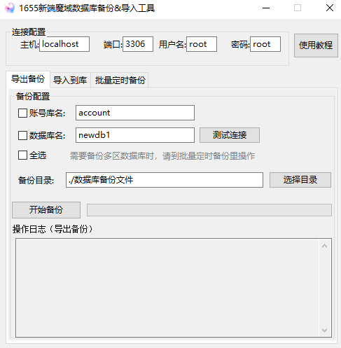

工具简介
1655魔域数据库备份&导入工具 是为玩单机开发的一款轻量小工具，专注于把繁琐重复的操作变得简单。它占用资源极小、无需安装即可运行。
核心功能
- 支持账号库单独备份，精准保存用户账号数据
- 支持主数据库单独备份，聚焦业务核心数据
- 支持双库批量备份，一次操作完成全量数据备份
- 支持指定 SQL 备份文件导入到目标数据库
- 实时反馈导入进度和错误信息，便于问题排查
使用说明
下载解压后直接运行主程序即可，无需依赖运行库。首次使用建议先阅读界面上的提示。

1655魔域数据库备份&导入工具 是为玩单机开发的一款轻量小工具，专注于把繁琐重复的操作变得简单。它占用资源极小、无需安装即可运行。
下载解压后直接运行主程序即可，无需依赖运行库。首次使用建议先阅读界面上的提示。